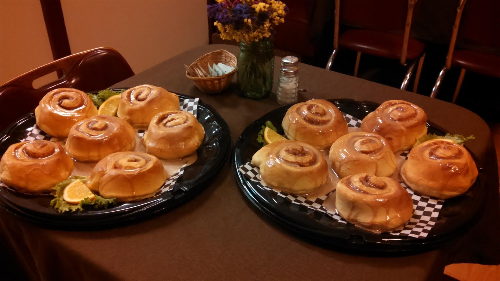
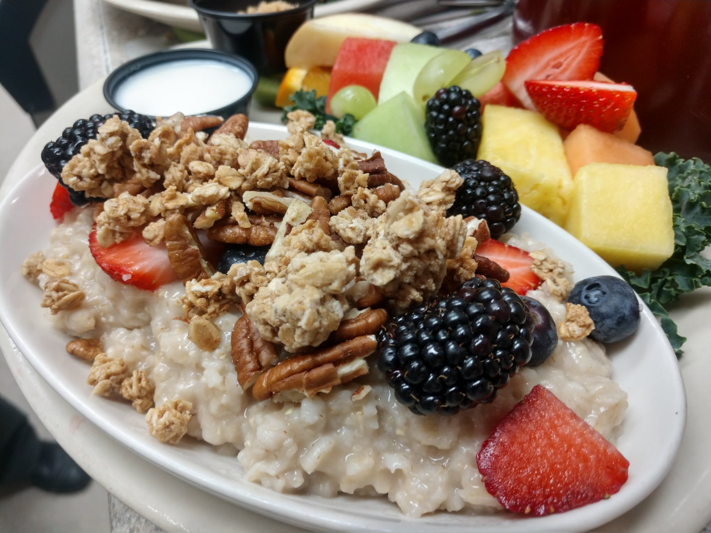
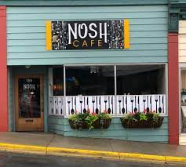
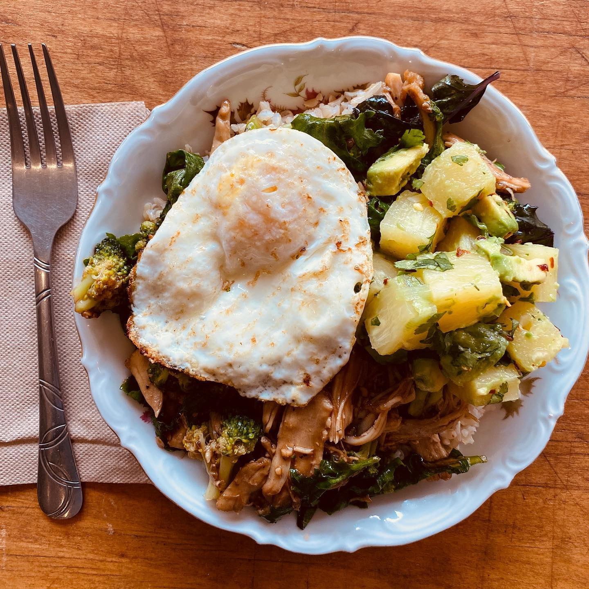

Best Food in Helena
Main Street Eats
 Main Street Eats is unassuming, far from town center, and honestly kind of looks rundown from the outside. However, if you give this place a chance, you will not be disapointed. Their french toast and breakfast sandwich are to die for. It is high end culinary knowlege meets hometown feel. This place is much cleaner than many other options, and you feel full and healthy when you leave.
Nosh Cafe
 Waffles, waffles, waffles. This place has the best waffle in town. Some would argue that Murray's has better, but here's the deal... Murray's only serves waffles on sunday. For Nosh, every day is waffle day. I'd reccomend the sausage and egg waffle paired with a drip coffee.
Park Avenue Bakery Bonjour Helena! Park Ave transports you right to the heart of France. Smells of freshly baked crossaints, warm espresso, and Norwegian farm bread is a welcoming experience at 6am on your commute to work. It's a lovely escape, and honestly, they have the best pasteries I've ever had, period. Take that France.